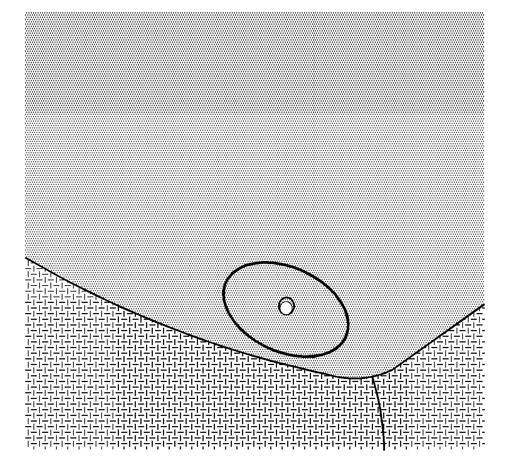
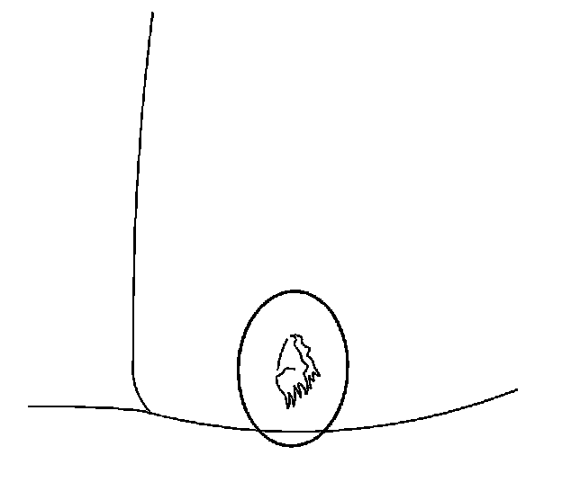
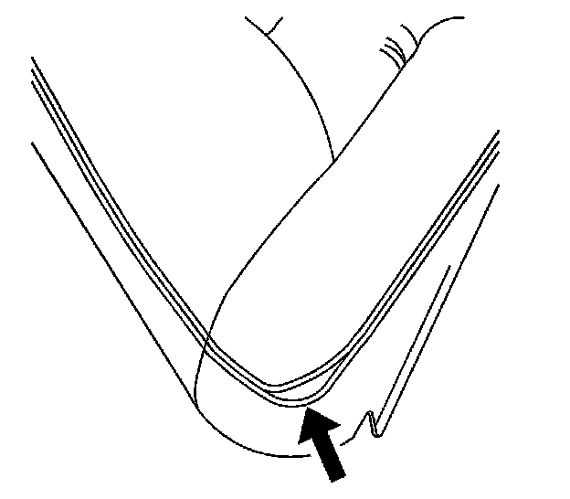
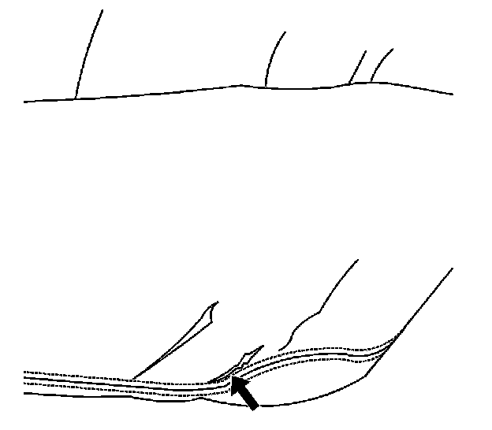

Interior - Seat Cover Wrinkle/Crease/Burn Info
INFORMATIONBulletin No.: 04-08-50-006D
Date: September 09, 2010
Subject: Minor Wrinkles/Creases, Discoloration, Cigarette Burns and Customer Induced Cuts and Stains on Front and Rear Driver and Passenger Seats with Leather, Vinyl or Cloth Seat Covers
Models:
2011 and Prior GM Passenger Cars and Light Duty Trucks
2009 and Prior HUMMER H2
2010 and Prior HUMMER H3
2009 and Prior Saab 9-7X
2010 and Prior Saturn
Supercede:
This bulletin is being revised to add a model year. Please discard Corporate Bulletin Number 04-08-50-006C (Section 08 - Body and Accessories).
If a customer comes in to your dealership due to certain conditions of the seat covers (splits, wrinkles, loose stitching, etc.), you must examine the seat cover in order to determine the validity of the customer claim. Some components from the above listed vehicles have been returned to the Warranty Parts Center (WPC) and analysis of these parts showed "customer induced damage" or No Trouble Found (NTF).
The dealer should pay particular attention to the following conditions:

- Cigarette burns

- Customer induced cuts (knife cuts, cut by customer tools, etc.)
- Paint stains (customer should have cleaned paint stains while paint was still wet)
- Coffee stains and other removable dirt
These should be cleaned as described in the Owner's Manual under Appearance Care. Also, refer to Corporate Bulletin Number 06-00-89-029A or later.
- Evidence of chemicals used for cleaning, other than those specified in the Owner's Manual
- Other chemical spills
- Minor and normal leather wrinkles as a result of use
- Other defects to the seat cover not detected during the pre-delivery inspection (PDI).
Inform the customer that the above issues were not present when the vehicle was purchased and cannot be replaced under warranty. The covers, however, may be repaired or replaced at the customer's expense.
The following conditions are not caused by the customer and should be covered by warranty:

- Split seams

- Wear/cracking/peeling
- Discoloration/dye transfer from customer clothing (if discoloration/dye transfer is not removed after using GM Leather and Vinyl Plastic Cleaner, P/N 88861401 (in Canada, P/N 88861409), replace the covers.)

Disclaimer